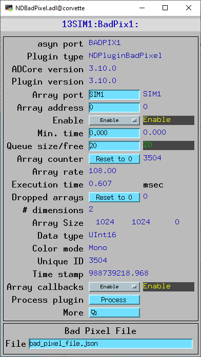

NDPluginBadPixel
- author:
Mark Rivers, University of Chicago
Overview
This plugin replaces bad pixels in an NDArray. It supports 3 different replacement mechanisms:
Set: The pixel value is set to a user defined value.
Replace: The pixel value is replaced by the value in a nearby pixel.
Median: The pixel value is replaced by the median value of nearby pixels.
The list of bad pixels in the detector is defined in a JSON file like this:
{ "Bad pixels" :
[
{"Pixel" : [200,100], "Set" : 0},
{"Pixel" : [300,100], "Set" : 1000},
{"Pixel" : [400,100], "Set" : 2000},
{"Pixel" : [200,200], "Replace" : [1,0]},
{"Pixel" : [300,200], "Replace" : [2,0]},
{"Pixel" : [400,200], "Replace" : [1,1]},
{"Pixel" : [200,300], "Median" : [1,1]},
{"Pixel" : [300,300], "Median" : [2,2]},
{"Pixel" : [400,300], "Median" : [3,3]}
]
}
The value of the top-level “Bad pixels” key is an array of bad pixels.
For each bad pixel in the array the value of the “Pixel” key is a 2-D array with the [X,Y] coordinates of the bad pixel.
The other key for each pixel must be one of “Set”, “Replace”, or “Median”.
The value of the “Set” key is the replacement value for the bad pixel.
The value of the “Replace” key is a 2-D array containing the relative [X,Y] coordinates of the replacement pixel whose value will replace that of the bad pixel. [1,0] is the pixel to the right of the bad pixel, [1,0] is the pixel below the bad pixel.
The value of the “Median” key a 2-D array containing the half-width [NX,NY] of the median filter in the X and Y directions. The actual size of the median filter is [2*NX+1, 2*NY+1], i.e. [1,1] is a 3x3 filter, [1,2] is a 3x5 filter, and [1,0] is a 3x1 filter using only the pixels immeditely to the left and right of the bad pixel. This definition ensures that the filter dimension is always odd and hence centered on the bad pixel.
The [X,Y] coordinates of the bad pixel are always defined in the raw detector coordinate system, i.e. those in which the all of the following detector readout options are disabled:
Reading a sub-region of the detector, rather than the entire detector.
Binning in X or Y.
Reversal in the X or Y dimensions.
If the detector is read out with a sub-region or with binning then plugin converts the raw coordinates from the JSON file to the new coordinates being used. This assumes that the detector driver has correctly set the required metadata to the NDDimension structures in the NDArray. This has been tested with ADSimDetector, but some drivers may need fixes to work correctly if any of the above readout options are enabled. The plugin does not handle reversal in X or Y, see Restrictions below.
Notes for Replace mode:
The replacement pixel should not be another bad pixel. The plugin checks for this, and if it is will print a warning message with ASYN_TRACE_WARNING, and will not perform the replacement.
The replacement pixel location must be a valid location, i.e. inside the NDArray bounds. The plugin checks for this, and if it is not a valid location the replacement is not performed.
Notes for Median mode:
If the pixels used in the median calculation include other bad pixels then the plugin prints a warning message with ASYN_TRACE_WARNING, the bad pixels will not be used, and the median calculation will be performed with fewer pixels.
The median calculation will use fewer pixels if the bad pixel is too close to the border. For example with a medianSize=[1,1] the plugin normally uses 8 pixels in calculating the median (3x3 minus the bad pixel itself). A bad pixel on any edge of the image will only use 5 pixels to calculate the median. A bad pixel in one of the 4 corners of the image will only use 3 pixels.
If there are no valid pixels, either because they are outside the image or because they are also bad, then the bad pixel value is not replaced.
The plugin works correctly with 1-D NDArrays, i.e. with NDArray.ndims=1. In this case the bad pixel file should use 0 for the Y value in the bad pixel location, the Replace value, and the Median value. For example:
{ "Bad pixels" :
[
{"Pixel" : [10,0], "Set" : 0},
{"Pixel" : [20,0], "Set" : 1000},
{"Pixel" : [30,0], "Set" : 2000},
{"Pixel" : [40,0], "Replace" : [1,0]},
{"Pixel" : [50,0], "Replace" : [2,0]},
{"Pixel" : [60,0], "Replace" : [3,0]},
{"Pixel" : [70,0], "Median" : [1,0]},
{"Pixel" : [80,0], "Median" : [2,0]},
{"Pixel" : [90,0], "Median" : [3,0]}
]
}
NDPluginBadPixel defines the following parameters.
Parameter Definitions in NDPluginBadPixel.h and EPICS Record Definitions in NDBadPixel.template |
||||||
|---|---|---|---|---|---|---|
Parameter index variable |
asyn interface |
Access |
Description |
drvInfo string |
EPICS record name |
EPICS record type |
NDPluginBadPixelFileName |
asynOctet |
r/w |
Name of the JSON bad pixel file. |
BAD_PIXEL_FILE_NAME |
$(P)$(R)FileName |
waveform |
Configuration
The NDPluginBadPixel plugin is created with the NDBadPixelConfigure command,
either from C/C++ or from the EPICS IOC shell.
NDBadPixelConfigure (const char *portName, int queueSize, int blockingCallbacks,
const char *NDArrayPort, int NDArrayAddr, const char *pvName,
size_t maxMemory, int priority, int stackSize, int maxThreads)
For details on the meaning of the parameters to this function refer to the detailed documentation on the NDBadPixelConfigure function in the NDPluginBadPixel.cpp documentation and in the documentation for the constructor for the NDPluginBadPixel class.
The following MEDM screen for the NDPluginBadPixel. The only item not in the base class screen is the name of the JSON bad pixel file.
Restrictions
The plugin does not handle reading out the detector in the reverse directions in X or Y because the NDArray does not currently contain enough information to calculate the original pixel coordinates. If image reversal is desired then NDPluginTransform can be used after NDPluginBadPixel.
The plugin current handles only Mono mode, it does not handle any of the RGB color modes. This could be added in the future.